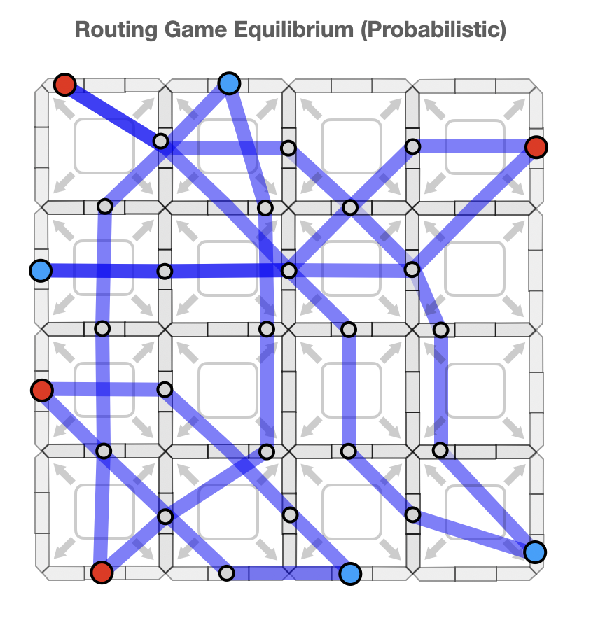
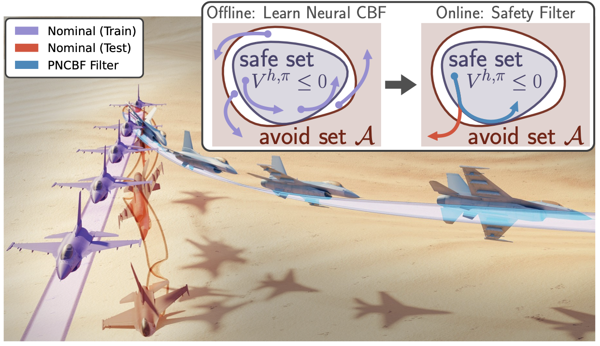
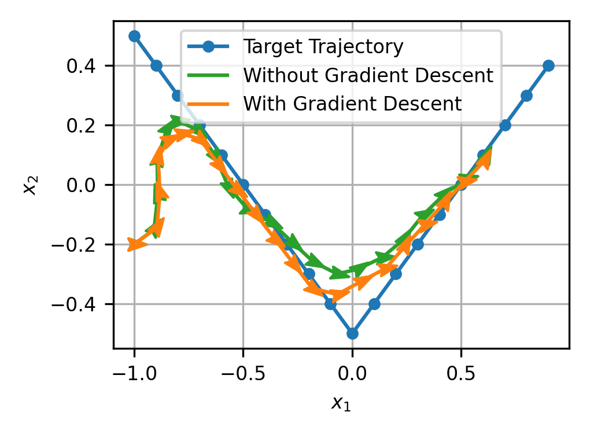
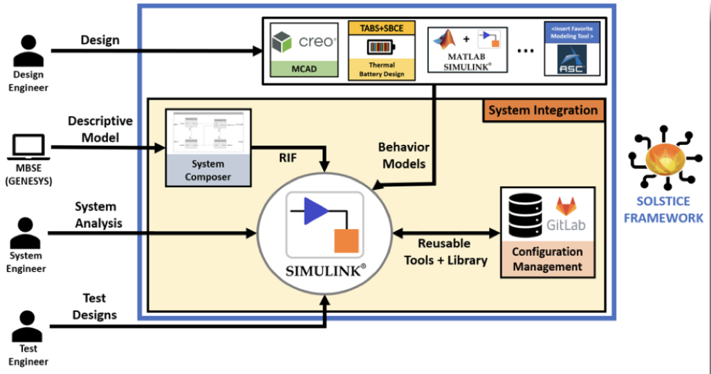
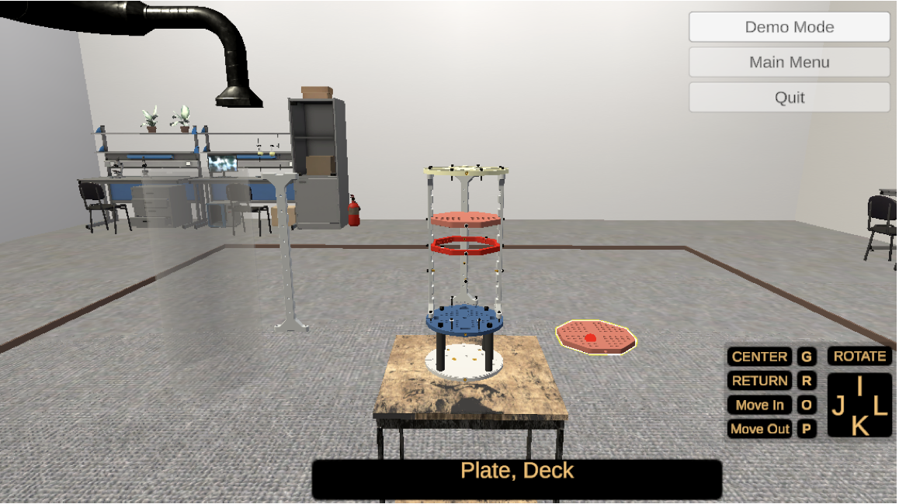

Jake Gonzales
Hi! I'm a PhD student in the Department of Electrical and Computer Engineering at the University of Washington where I am advised by Prof. Lillian Ratliff and Prof. Behçet Açıkmeşe. I am a member of the Autonomous Controls Lab and also work closely with Prof. Karen Leung and the Control & Trustworthy Robotics Lab. I am fortunate to be supported by the NSF Graduate Research Fellowship and previously an Amazon PhD Fellowship.
My research lies at the intersection of control theory, machine learning, optimization, uncertainty quantification, and game theory, with a specific focus on decision-making in multi-agent systems. I am particularly interested in developing theoretical frameworks and principled algorithms that enable AI systems to reason about uncertainties, interact safely with other agents, and adapt effectively in dynamic, open-world environments.
Previously, I did my undergrad in ECE at the University of New Mexico, where I did undergrad research in the Human-Centered Systems and Control Lab and was supervised by Prof. Meeko Oishi. My research was in data-driven control and stochastic optimal control. I'm intersted in developing methods for practical applications, so I have spent time doing internships at Sandia National Labs, MIT Lincoln Labs, and Amazon Robotics.
Github
G. Scholar
LinkedIn
CV
jakegonz [at] uw [dot] edu
news
- June 2026 I started an internship as a Robotics Applied Scientist in the Industrial Robotics Group at Amazon!
- May 2026 Excited to share our latest preprint, Structure from Strategic Interaction & Uncertainty: Risk Sensitive Games for Robust Preference Learning!
- April 2026 My advisor, Lily, gave a talk at the MIT LIDS seminar series on our recent work! Check it out here: Strategic Uncertainty as Structure: Game-Theoretic Approaches to Scalable and Robust AI.
- March 2026 We have a new preprint out titled Strategically Robust Multi-Agent Reinforcement Learning with Linear Function Approximation!
- June 2025 I attended the first ever YC AI Startup School in San Francisco!
- June 2025 I started an internship as an Applied Scientist at Amazon Robotics in Greater Boston.
- May 2025 I passed my qualifying exam!
- Dec. 2024 I received the Amazon Robotics Elevate Fellowship Funds ($10,000 award)!
- Aug. 2024 I was awarded an Amazon PhD Fellowship from the UW Amazon Science Hub (1 year of funding)! Check out the announcement!
- March 2024 Presented my research on a Hierarchical Framework for Scalable Multi-Agent Autonomous Mobility in a lightning talk and poster session at the ECE research showcase.
- Sept. 2023 Started my PhD in the rain at UW!

Hierarchical Decision Framework for Multi-Agent Path Finding
Jake Gonzales, Joey Sullivan, Samuel Burden, Lillian Ratliff, Daniel Calderone
In Preperation
Webpage

How to Train Your Neural Control Barrier Function: Learning Safety Filters for Complex Input-Constrained Systems
Oswin So, Zachary Serlin, Makai Mann, Jake Gonzales, Kwesi Rutledge, Nicholas Roy, Chuchu Fan
International Conference on Robotics and Automation (ICRA) 2024
Webpage •
PDF

Data-Driven Stochastic Optimal Control Using Kernel Gradients
Adam J. Thorpe, Jake A. Gonzales, Meeko MK Oishi
American Control Conference, 2023
PDF

Advancing Model Credibility for Linked Multi-Physics Surrogate Models within a Coupled Digital Engineering Workflow of Nuclear Deterrence Systems
Sofie W. Schunk, Shane McMurray, Jake A. Gonzales
Model Validation and Uncertainty Quantification, Volume 3, Proceedings of the 41st IMAC, 2023
PDF

Visualization of MBSE Datasets in an Interactive 3D Game Engine
Kelsey Wilson, Ruby Ta, Jake Gonzales, Seethamble S. Mani, Casey Noll, Wesley Krueger, William Gruner, Timothy Wisley
Western States Regional Conference INCOSE, 2022
EE 406 Teaching Engineering
Graded homework and class projects for 45+ students and delivered a demonstration on effective presentation techniques.
ECE 238 Computer Logic Design
Led lab sessions for 50+ students per semester and delivered short lectures on course topics.
ECE 101 Intro. to Electrical Engineering
Led remote lab sessions and assisted 50+ students per semester with homework during COVID-19.
Decision-Theoretic Uncertainty Adaptation in Multi-Agent Systems: Algorithms with Provable Guarantees
Hierarchical Framework for Scalable Multi-Agent Autonomous Mobility
Systems Engineering Leveraging a Commercial Gaming Platform
Fusing of Model-Based Systems Engineering and Virtual Reality
Research Mentor
- Max Horwitz, UW ECE & Pure Math undergrad
- Aly Ahmed, UW CSE & Math undergrad
- Alexandra Yankovskaya, UW ECE undergrad
Research Mentor, Tesla STEM High School
Mentoring a high school student using control theory and AI for time-series prediction in financial markets.
Graduate Student Mentor, Machine Learning Reading Program
Volunteered as a graduate student mentor in the UW MLRP, which pairs graduate and undergraduate students to read and discuss AI papers.
Graduate Student Volunteer, Graduate Application Support Program
Provided feedback to underrepresented prospective PhD students applying to UW ECE through a graduate application support program.
DEI Advisory Committee Member
Served on the UW ECE DEI advisory committee to provide input on faculty/staff searches and advocate for initiatives promoting department inclusion.
Math Mentor, Prison Mathematics Project
Mentored an inmate rehabilitating himself through mathematics.
Research Mentor, Tesla STEM High School
Mentored high school students using machine learning to model mercury pollution in aquatic ecosystems.
Peer Mentor
Mentored five new undergrad engineering students from traditionally underrepresented groups.
Chess Coach
Taught chess at local K-8 schools in Albuquerque, NM to 100+ students.